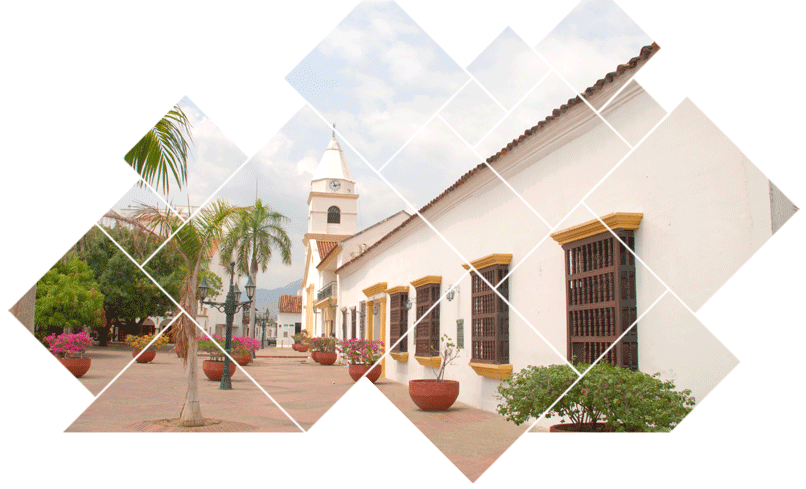

- 


| INICIO | CURADOR | QUIENES SOMOS | TRAMITES Y REQUISITOS | CONSULTAS | DESCARGAS | TRANSPARENCIA | CONTACTOS |
LICENCIA DE CONSTRUCCION
Es la autorización previa para desarrollar edificaciones en uno o varios predios, de conformidad con lo previsto en el Plan de Ordenamiento Territorial, los instrumentos que lo desarrollen y complementen y demás normatividad que regule la materia. Son modalidades de la licencia de construcción las siguientes:
1. Obra nueva. Es la autorización para adelantar obras de edificación en terrenos no construidos.
2. Ampliación. Es la autorización para incrementar el área construida de una edificación existente, entendiéndose por área construida la parte edificada que corresponde a la suma de las superficies de los pisos, excluyendo azoteas y áreas sin cubrir o techar.
3. Adecuación. Es la autorización para cambiar el uso de una edificación o parte de ella, garantizando la permanencia del inmueble original. Cuando no se autoricen obras, solamente deberá cancelarse el (50%) del valor del cargo fijo "Cf" de la fórmula para la liquidación de expensas de que trata el artículo 109 del presente decreto, ante el curador urbano que adelante el trámite.
4. Modificación. Es la autorización para variar el diseño arquitectónico o estructural de una edificación existente, sin incrementar su área construida.
5. Restauración. Es la autorización para adelantar las obras tendientes a recuperar y adaptar una edificación declarada como bien de interés cultural o parte de ella, con el fin de mantener el uso original o permitir el desarrollo de otro uso garantizando en todo caso la conservación de los valores urbanos, arquitectónicos, estéticos e históricos establecidos en su declaratoria.
6. Reforzamiento Estructural. Es la autorización para intervenir o reforzar la estructura de uno o varios inmuebles, con el objeto de acondicionarlos a niveles adecuados de seguridad sismo-resistente de acuerdo con los requisitos de la Ley 400 de 1997 o la norma que la adicione, modifique o sustituya y su reglamento.
7. Demolición. Es la autorización para derribar total o parcialmente una o varias edificaciones existentes en uno o varios predios y deberá concederse de manera simultánea con cualquiera otra modalidad de licencia de construcción, salvo cuando se trate de proyectos de renovación urbana, del cumplimiento de orden judicial o administrativa o de la ejecución de obras de infraestructura vial o de servicios públicos domiciliarios que se encuentren contemplados en el Plan de Ordenamiento Territorial o en los instrumentos que lo desarrollen y complementen.
8. Cerramiento. Es la autorización para encerrar de manera permanente un predio de propiedad privada.
LICENCIA DE SUBDIVISION
Es la autorización previa para dividir uno o varios predios, ubicados en suelo rural, urbano o de expansión urbana, de conformidad con lo dispuesto en el Plan de Ordenamiento Territorial, los instrumentos que lo desarrollen y complementen y demás normatividad vigente aplicable a las anteriores clases de suelo. Son modalidades de la licencia de subdivisión las siguientes:
1. Subdivisión rural. Es la autorización previa para dividir materialmente uno o varios predios ubicados en suelo rural o de expansión urbana de conformidad con el Plan de Ordenamiento Territorial y la normatividad agraria y ambiental aplicables a estas clases de suelo, garantizando la accesibilidad a cada uno de los predios resultantes.
2. Subdivisión urbana. Es la autorización para dividir materialmente uno o varios predios urbanizables no urbanizados ubicados en suelo urbano, de conformidad con las normas que para el efecto establezcan el Plan de Ordenamiento Territorial y los instrumentos que lo desarrollen o complementen.
3. Reloteo. Es la autorización para dividir, redistribuir o modificar el loteo de uno o más predios previamente urbanizados, de conformidad con las normas que para el efecto establezcan el Plan de Ordenamiento Territorial y los instrumentos que lo desarrollen y complementen.
LICENCIA DE URBANISMO
Es la autorización previa para ejecutar en uno o varios predios localizados en suelo urbano, la creación de espacios públicos y privados y la construcción de las obras de infraestructura de servicios públicos y de vías que permitan la adecuación y dotación de estos terrenos para la futura construcción de edificaciones con destino a usos urbanos, de conformidad con el Plan de Ordenamiento Territorial, los instrumentos que lo desarrollen y complementen y demás normatividad vigente.
LICENCIA DE PARCELACION
Es la autorización previa para ejecutar en uno o varios predios localizados en suelo rural y suburbano, la creación de espacios públicos y privados, y la ejecución de obras para vías e infraestructura que garanticen la auto prestación de los servicios domiciliarios que permitan destinar los predios resultantes a los usos permitidos por el Plan de Ordenamiento Territorial, los instrumentos que lo desarrollen y complementen y la normatividad agraria y ambiental aplicable a esta clase de suelo.
RECONOCIMIENTO DE EDIFICACIONES EXISTENTES
Es la actuación por medio de la cual se declara la existencia de las edificaciones que se construyeron sin obtener licencias siempre y cuando cumplan con el uso previsto por las normas urbanísticas vigentes y que estas obras hayan sido ejecutadas como mínimo cinco (5) años antes de la solicitud de reconocimiento. Este término no aplicara en aquellos casos en que el solicitante deba obtener el reconocimiento por orden judicial o administrativa.
LICENCIA DE CONSTRUCCION
1. Copia del certificado de libertad y tradición del inmueble(s) objeto de la solicitud
2. Documento legal para acreditar la existencia y representación de personas jurídicas
3. Poder debidamente otorgado, cuando se actúe mediante apoderado
4. Copia del documento que acredite el pago o declaración privada con pago del impuesto predial de los últimos cinco años en relación con el inmueble o inmuebles objeto de la solicitud, donde figure la nomenclatura alfanumérica o identificación del predio(s).
5. Plano de localización e identificación del predio(s) objeto de la solicitud
6. Formato de declaración de vivienda de interés social, cuando el proyecto tenga destinación a vivienda de interés social.
7. Cuando el solicitante sea un poseedor, prueba sumaria de la calidad de poseedor.
8. Copia de la memoria de los cálculos estructurales, de los diseños estructurales, de las memorias de otros diseños de elementos no estructurales y de los estudios geotécnicos y de suelos.
9. Copia heliográfica y magnética del proyecto arquitectónico y todos los planos requeridos
10. Licencias anteriores o instrumento que hiciera sus veces y sus planos cuando la solicitud se presenta ante autoridad distinta a la que otorgó la licencia original. Excepto para obra nueva.
11. Concepto favorable del Consejo de Monumentos Nacionales o de su filial o de la entidad que haga sus veces, cuando el objeto de la licencia sea la intervención de un bien de interés cultural
12. Copia de acta del órgano competente de administración de la propiedad horizontal o del documento que haga sus veces, según lo disponga el reglamento de propiedad horizontal vigente, autorizando la ejecución de las obras solicitadas cuando se trate de inmuebles sometidos al régimen de propiedad horizontal.
LICENCIA DE SUBDIVISION
1. Copia del certificado de libertad y tradición del inmueble(s) objeto de la solicitud
2. Documento legal para acreditar la existencia y representación de personas jurídicas
3. Poder debidamente otorgado, cuando se actúe mediante apoderado
4. Copia del documento que acredite el pago o declaración privada con pago del impuesto predial de los últimos cinco años en relación con el inmueble o inmuebles objeto de la solicitud, donde figure la nomenclatura alfanumérica o identificación del predio(s).
5. Plano de localización e identificación del predio(s) objeto de la solicitud
6. Formato de declaración de vivienda de interés social, cuando el proyecto tenga destinación a vivienda de interés social.
7. Cuando el solicitante sea un poseedor, prueba sumaria de la calidad de poseedor.
8. Plano del levantamiento topográfico que señale la división propuesta. (Modalidades de subdivisión Rural y Urbana).
9. Plano de loteo aprobado o plano topográfico que haya incorporado urbanísticamente el predio. (Modalidad de reloteo)
10. Plano que señale los predios resultantes de la división propuesta. (Modalidad de reloteo)
LICENCIA DE URBANISMO
1. Copia del certificado de libertad y tradición del inmueble(s) objeto de la solicitud
2. Documento legal para acreditar la existencia y representación de personas jurídicas
3. Poder debidamente otorgado, cuando se actúe mediante apoderado
4. Copia del documento que acredite el pago o declaración privada con pago del impuesto predial de los últimos cinco años en relación con el inmueble o inmuebles objeto de la solicitud, donde figure la nomenclatura alfanumérica o identificación del predio(s).
5. Plano de localización e identificación del predio(s) objeto de la solicitud
6. Formato de declaración de vivienda de interés social, cuando el proyecto tenga destinación a vivienda de interés social.
7. Cuando el solicitante sea un poseedor, prueba sumaria de la calidad de poseedor.
8. Plano topográfico del predio.
9. Copia heliográfica y magnética del proyecto urbanístico.
10. Certificaciones de la disponibilidad inmediata de servicios públicos
11. Estudios técnicos y ambientales que señalen las medidas de mitigación de riesgos si es del caso
LICENCIA DE PARCELACION
1. Copia del certificado de libertad y tradición del inmueble(s) objeto de la solicitud
2. Documento legal para acreditar la existencia y representación de personas jurídicas
3. Poder debidamente otorgado, cuando se actúe mediante apoderado
4. Copia del documento que acredite el pago o declaración privada con pago del impuesto predial de los últimos cinco años en relación con el inmueble o inmuebles objeto de la solicitud, donde figure la nomenclatura alfanumérica o identificación del predio(s).
5. Plano de localización e identificación del predio(s) objeto de la solicitud
6. Formato de declaración de vivienda de interés social, cuando el proyecto tenga destinación a vivienda de interés social.
7. Cuando el solicitante sea un poseedor, prueba sumaria de la calidad de poseedor.
8. Plano topográfico del predio.
9. Copia heliográfica y magnética del proyecto de parcelación.
10. Autorizaciones para la autoprestación de los servicios de energía, agua y el manejo de vertimientos y residuos sólidos.
11. Estudios técnicos y ambientales que señalen las medidas de mitigación de riesgos si es del caso
RECONOCIMIENTO DE LA EXISTENCIA DE EDIFICACIONES
1. Copia del certificado de libertad y tradición del inmueble(s) objeto de la solicitud
2. Documento legal para acreditar la existencia y representación de personas jurídicas
3. Poder debidamente otorgado, cuando se actúe mediante apoderado
4. Copia del documento que acredite el pago o declaración privada con pago del impuesto predial de los últimos cinco años en relación con el inmueble o inmuebles objeto de la solicitud, donde figure la nomenclatura alfanumérica o identificación del predio(s).
5. Plano de localización e identificación del predio(s) objeto de la solicitud
6. Formato de declaración de vivienda de interés social, cuando el proyecto tenga destinación a vivienda de interés social.
7. Cuando el solicitante sea un poseedor, prueba sumaria de la calidad de poseedor.
8. Levantamiento arquitectónico de la construcción.
9. Copia del peritaje técnico para determinar la estabilidad de la construcción y las intervenciones y obras a realizar.
10. Declaración de la antigüedad de la construcción.
| Dirección: Calle 16 No. 6 - 90 | Teléfono: 5888428 | E-mail: curadurianumero2@hotmail.es 2014 © Copyright. CURADURIA URBANA No.2 DE VALLEDUPAR. |